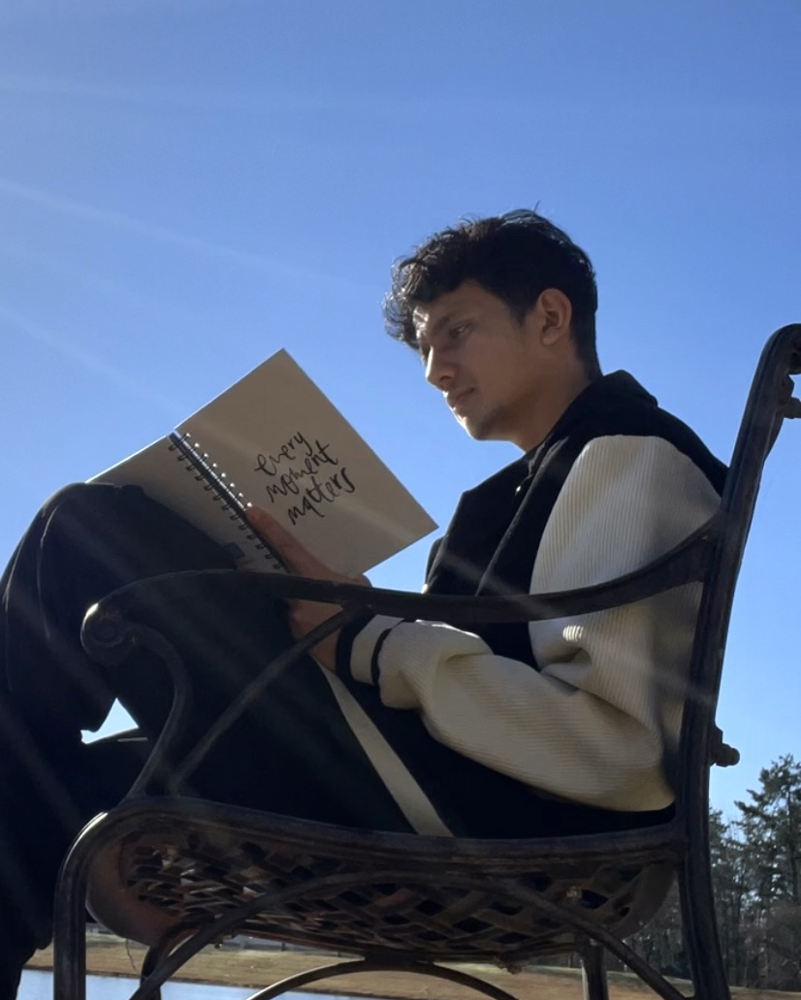

Anxiety to Empowerment

June 9, 2023
From Anxiety to Empowerment: A Journey of Self-Discovery.
In the face of adversity, there lies an opportunity for growth and transformation. This is the empowering story of my personal battle with anxiety—a journey that led to self-discovery, recovery, and a burning desire to help others facing similar challenges. This tale serves as an inspiration to those who believe that anxiety is insurmountable, shedding light on the power of self-care, mindfulness, and pursuing one's true passions.
My battle for anxiety began four months ago. I am now fully recovered and feel incredibly proud. What makes my journey unique is that I managed to overcome anxiety without relying on medication. Initially, my doctor recommended medication, but I requested an appointment for a later date, assuring them that I would improve by then. Recognizing the severity of my condition, the doctor reluctantly provided me with a prescription just in case. However, I never took the medication home, as I was determined to find my own path to healing. Although counseling was suggested as an alternative, the long waiting period of nine months made me realize that many others were also struggling, and it was not just me. This realization prompted me to reflect on my own coping mechanisms and explore the power of meditation, a practice I had dabbled in for the past five years.
Little did I know that this journey would teach me valuable lessons and change the course of my life.
For the past five years, I have intermittently practiced meditation, finding solace in its ability to bring me inner peace and tranquility. However, I must admit that I never truly committed to meditation until two years ago and I embarked on a consistent 810-day streak as of today . It was during this time that anxiety unexpectedly entered my life, leaving me puzzled and bewildered. I had always believed that meditation alone was enough to combat anxiety, but this experience taught me a valuable lesson: dealing with anxiety requires more than just a single meditation practice. Through my journey, I have gained profound insights and identified four significant factors that contributed to my anxiety.
Firstly, I realized that my excessive workload played a crucial role in my mental distress. I tended to overwork myself, denying the importance of breaks and personal time. This lack of self-care took a toll on my mental well-being, ultimately leading to heightened anxiety.
Secondly, I discovered that my misconceptions about health and fitness had a negative impact on my mental state. I mistakenly believed that adhering to a stringent exercise regimen and following strict dietary rules was the key to optimal health. However, this approach only added undue pressure and left me feeling dissatisfied, contributing to my anxiety.
Furthermore, I recognized the influence of my dietary choices on my anxiety levels. While focusing on eating healthy is important, I failed to realize that finding joy and satisfaction in my meals was equally crucial. Small mistakes in my eating habits, such as combining incompatible foods or overeating, had a significant impact on my overall well-being and exacerbated my anxiety.
Lastly, I discovered that my habit of dreaming without acting had a profound effect on my anxiety. I tended to envision grand plans and aspirations, but I consistently looked for the perfect moment to start working towards them. This constant search for the ideal circumstances left me feeling confused, overwhelmed, and anxious about my future.
However, through this transformative journey, I have found clarity and a sense of purpose. Graduating with an MBA in the coming fall, I have decided to dedicate my efforts to the field of psychology. I view my anxiety as a pivotal lesson, urging me to make positive changes in my life. I want to help others understand that anxiety is not an insurmountable obstacle. It is a common struggle that many people face, but it does not define us or determine our ultimate outcome.
My meditation practice, and yoga though initially inconsistent, has played a significant role in my journey towards self-discovery. I have learned that anxiety is a multifaceted issue, influenced by various aspects of our lives. By addressing these factors, such as workload, fitness misconceptions, dietary choices, and the need for action, we can begin to navigate the path towards healing. I am determined to share my story, spreading awareness and support to those who may be facing similar challenges. Through empathy and understanding, we can collectively conquer anxiety and forge a path of empowerment and resilience.
In conclusion, this is just the beginning of my story. I am eager to share more about how my journey with anxiety unfolded, the experiences I went through, and the invaluable lessons I have learned along the way. By openly discussing my struggles, I hope to shed light on how it all started, the challenges I faced, and the triumphs I achieved. Through my narrative, I aim to inspire others who may be grappling with anxiety, assuring them that they are not alone and that there is always hope for a brighter tomorrow.
As I reflect on my journey, a quote comes to mind: "The more you share and the more you hear, the less you fear." By embracing vulnerability and opening up about our experiences, we create an environment of understanding and support. Sharing our stories allows us to connect on a deeper level, realizing that anxiety is a shared human experience. Together, we can break down the barriers of fear and stigma, fostering empathy and compassion.
In the chapters to come, I will delve further into the details of my journey, sharing the highs and lows, the moments of despair and triumph, and the wisdom gained along the way. Through sharing, listening, and supporting one another, we can collectively diminish the power of anxiety and build a community rooted in strength, understanding, and hope. Together, let us embrace the power of our stories and pave the way towards a brighter, anxiety-free future.
Many individuals, including myself, often feel hesitant and afraid to disclose their experiences with anxiety. I once carried that same fear within me. However, I came to realize that keeping silent was not the solution. Instead, I discovered that opening up about my journey not only helped me in my own healing process but also provided support and guidance to those who may face similar challenges in the future.
The stigma surrounding anxiety often creates a sense of shame or embarrassment, causing many to hide their struggles and suffer in silence. But I have come to understand that sharing our stories is a powerful tool. By breaking through our own barriers and speaking honestly about our experiences, we not only find solace and empowerment for ourselves but also create a space where others feel safe to share their own struggles.
Rather than simply stating that I "had" anxiety, I prefer to reframe it as becoming "aware." This shift in perspective helps me to view my journey as an opportunity for growth, self-discovery, and resilience. It allows me to approach anxiety as a teacher, offering valuable lessons that I can impart to others.
By stepping out of the shadows and sharing our stories, we challenge the misconceptions surrounding anxiety. We show others that it is a common human experience and that seeking help and support is not a sign of weakness but an act of courage. Together, we can normalize conversations about mental health and encourage a more compassionate and understanding society.
I firmly believe that opening up about our struggles with anxiety not only benefits ourselves but also serves as a beacon of hope for those who may be silently suffering. It is through our vulnerability that we create connections, foster empathy, and build a support network that can guide others towards their own paths of healing.
So, let us cast aside our fears and embrace the power of sharing. By doing so, we not only help ourselves find strength and acceptance but also pave the way for a future where anxiety is understood, discussed openly, and met with compassion and support.